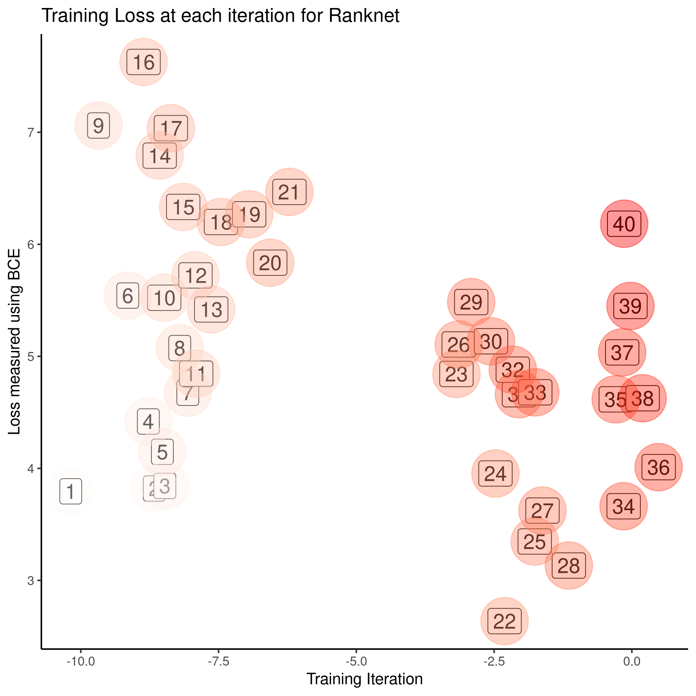

RankNet
Ryan Greenup
Created: 2021-02-26 Fri 00:56
Introduction
- What is Learning to Rank?
- Why would we use it?
- What were we trying to find?
Implementing the Approach
How does it work
- Fit a model: \(\enspace f(\vec{x_i}) = s_i\)
Train the model so as to minimise the error of:
\[ p_{ij} = \frac{1}{1+e^{\sigma \cdot (s_i-s_j)}} \quad \exists \sigma \in \mathbb{R} \]
What do you mean by error
We were using a version of BCE:

Building the RankNet
Make some Data
Build a Neural Network
Adapt the Neural Network
- Identify Pairs
- Send each pair down one after the other
- Use the sigmoid of there difference to get an output value
Train the Model

Caveat
It seems not all data can be trained, see example
Results
Trained Model
Apply Quicksort using the model:

Untrained
Unfourtunately, an untrained model…
Discussion
Take aways
- Don't use an NN library at first
- Start with a simple dataset
Where to from Here
- Look at ways to evaluate whether it's working
- Ways to automate the training
- e.g.
grep
- e.g.
- Apply to real-world data sets like wine
- Adapt to work with a corpus
- Try and apply this within a search engine